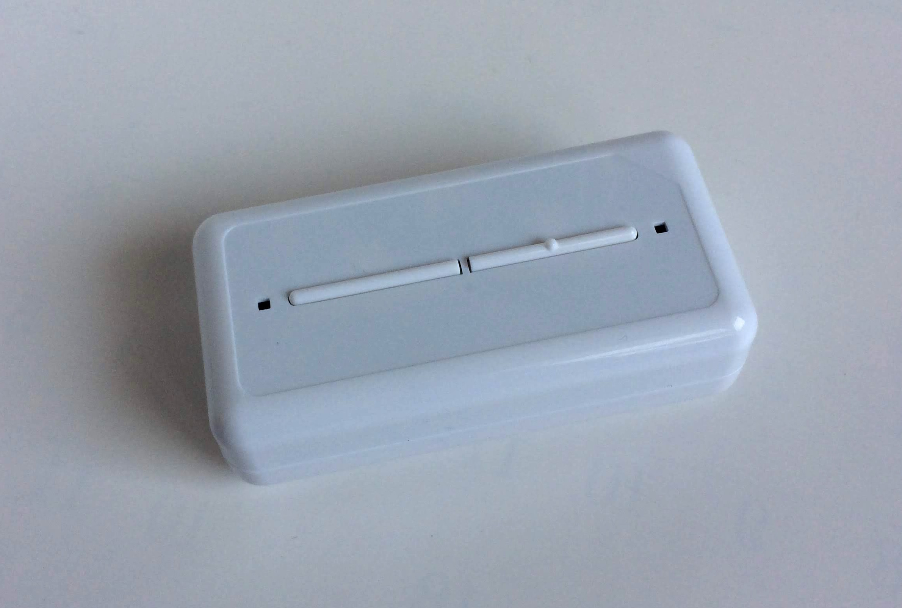
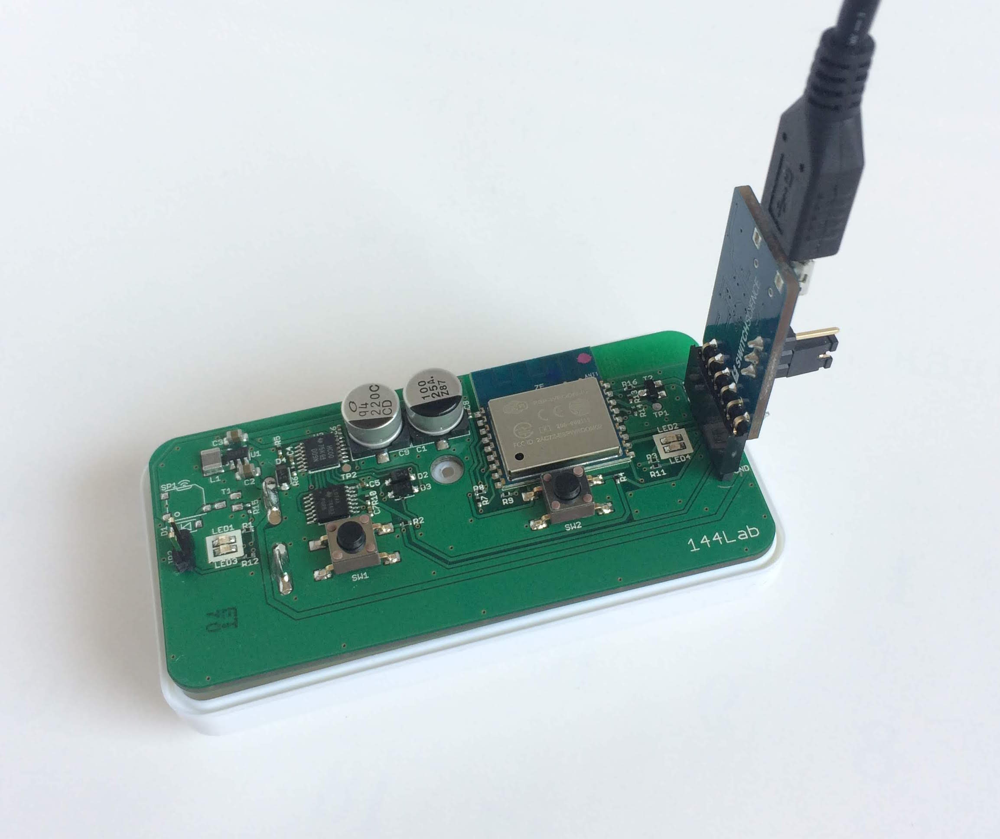
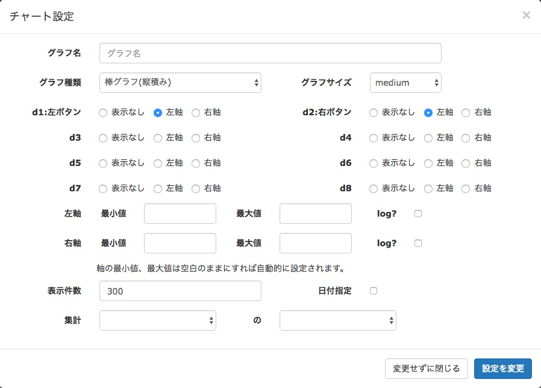
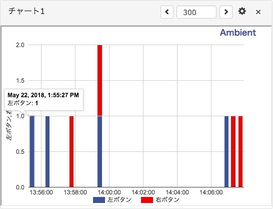
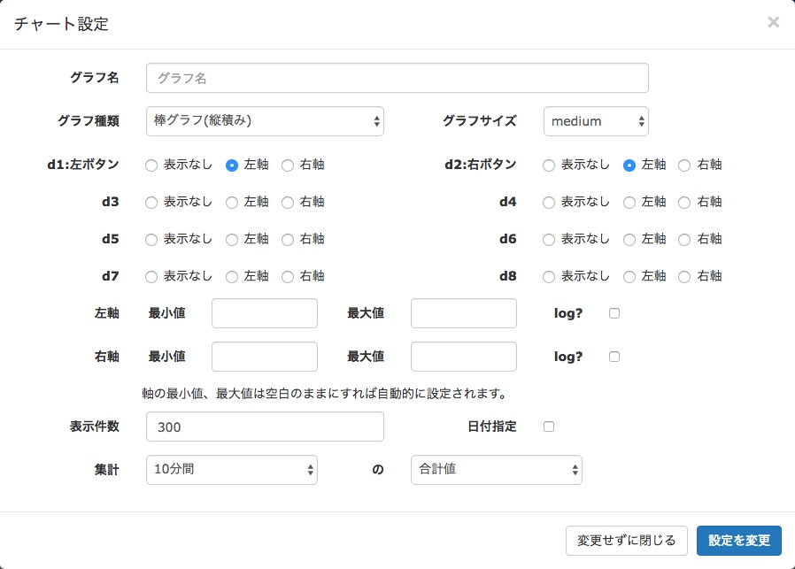
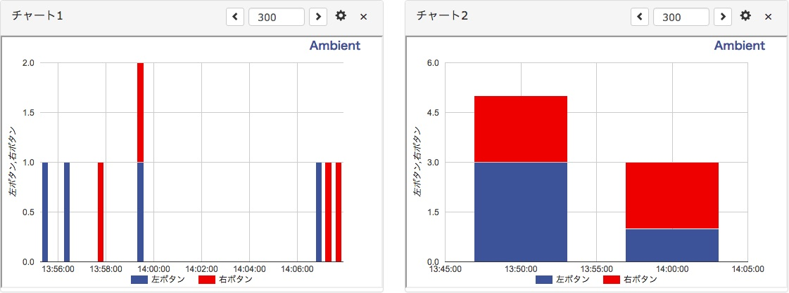

「AmbientでIoTをはじめよう」の第6回は、 「うんこボタン」のボタンを押した回数をクラウドに送信し、記録する事例を紹介します。
「うんこボタン」は名前はふざけているようですが、赤ちゃんの排泄を簡単に記録し、育児の記録と共有に役立てるという真面目なデバイスです。 8.4cm x 4.2cmの小さなケースにボタンが二つついていて、デフォルトではうんちとおしっこの記録に使います。 ボタンを押すと信号がWi-Fi経由で「うんこボタン」のクラウドサービスに送られ、記録され、スマホアプリなどで確認できるしくみです。

「うんこボタン」はクラウドファンディングを利用して開発されました。 支援コースの一つに「ハッカーコース」という、 「うんこボタン」を利用してインターネットボタンを自作するコースがありました。 今回はこのハッカーコースで入手した「うんこボタン」と、参考情報を利用して、 「うんこボタン」のボタンを押した回数をAmbientに送ってカウントするインターネットボタンを作ります。
「うんこボタン」の中にはWi−Fi通信モジュール搭載の32ビットマイコンESP8266が搭載されています。 PCとの通信機能は含まれていませんが、USBシリアル変換アダプターをつけることで、PCとUSBで通信できるようになります。 「うんこボタン」側にピンヘッダをはんだ付けし、USBシリアル変換アダプターを接続します。

「うんこボタン」にはマイコンの他に左右のスイッチ計2個、左右それぞれの赤と緑のLED計4個などが搭載されています。
今回使用した部品を表にしました。
| 部品 | 個数 |
|---|---|
| うんこボタン | 1個 |
| FTDI USBシリアル変換アダプター Rev.2 | 1個 |
| 普通のピンヘッダ10本セット | 1個 |
「うんこボタン」はPCと接続することでArduinoでプログラミングできます。Arduino IDEの設定は通常のESP8266用の設定と同じです。 詳細は「うんこボタン」のハッカーコースのページをご覧ください。
「うんこボタン」にUSBシリアル変換アダプターを接続し、USBケーブルでPCにつなぎます。 ハッカーコースのページに左右のボタンを押すと、左右のLEDが1秒程度点灯するという基本的なプログラムがあるので、それをArduino IDEにコピーし、ビルドします。 「うんこボタン」にプログラムを書き込む時は、USBシリアル変換アダプターを接続した場所と反対側にあるJP2をつないだ状態で電源を入れて書き込みます。
プログラムを動作させる時はJP2をつながない状態にします。プログラムは次のような動作をしています。
スイッチが押されていない時はDeep Sleep状態でスイッチが押されるまで待つことで、 電池駆動でも長期間動作を可能にしているようです。
「うんこボタン」の動作確認ができたら、プログラムを変更し、ボタンが押されたらAmbientに送信するようにします。プログラムを示します。
初期化処理のboot()関数は動作確認で使った基本プログラムと同じです。 65行目から始まるsetup()関数の中でまずAmbientの初期化を行い(68行目)、左のボタンが押されていたらAmbientの1番目のデータに1をセットし(72行目)、 右のボタンが押されていたら2番目のデータに1をセットします(76行目)。 Wi-Fiに接続し、Ambientにデータを送信して(89行目)、Deep Sleepに入ります。 setup()関数の中で必要な処理をおこない、次にボタンが押されるまでDeep Sleepするので、 loop()関数は実行されません。
プログラムをビルドし、「うんこボタン」にダウンロードして動かします。 左右のボタンを押すと、押した側のLEDが点灯し、Ambientにデータが送信されます。
Ambientのチャートは、センサデータの時系列の変化を見る時などはデフォルトの折れ線グラフが便利です。 今回は何かイベントが発生したらボタンを押してそれを記録しているので、棒グラフを使うことにします。 ボタンが二つあるので、縦積み棒グラフを使います。 最初にチャネル設定画面で「データー1」に「左ボタン」、「データー2」に「右ボタン」という名前をつけておくと分かりやすいでしょう。 チャートの設定はグラフ右上の歯車ボタンをクリックし、チャート設定画面でおこないます。

グラフ種類で「棒グラフ(縦積み)」を選択し、d1:左ボタンとd2:右ボタンを表示するように選択します。
何回かボタンを押してみたのが次のチャートです。

1時55分に左ボタンが1回押され、次も左、次は右で、その次は左右のボタンが同時に押されています。
Ambientには10分間から1時間のデータの合計や平均を計算する機能があります。 これを使うと次のように10分間に左右のボタンが何回押されたかを表示することができます。

チャート設定の集計欄で「10分間」の「合計値」を選択します。区間は10分間、15分間、20分間、30分間、1時間が選択できます。 チャートを追加して一つのチャートは生データ、もう一つは集計データを表示することもできます。

「うんこボタン」は赤ちゃんのうんちとおしっこを記録するという目的で開発されましたが、汎用性のあるインターネットボタンです。 工夫次第でいろいろなモノゴトの記録ができそうです。
この記事はアンビエントデーターの下島が担当しました。